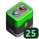

Power¶
Survival Frontier adds the first power source to Survival that makes energy instead of only storing it: solar. Solar Panels charge a Mega Battery Bank through a Charge Controller, and an Inverter turns the Bank's stored charge into power for the new devices: Floodlights, Chargers for Rechargeable Batteries, and Teleport Pads. Vanilla electric engines, drills and growbeds run straight off the Bank. Solar is slow and best at stationary outposts. Batteries stay the fast, portable option.
At a glance
- The chain: Solar Panels > Charge Controller > Mega Battery Bank > Inverter > Floodlight / Charger / Teleport Pad.
- Unit: 1 charge = 1 normal Battery. A Mega Battery holds 100, a Rechargeable Battery 25, a Bank 100.
- Solar Panel: 15 charge per clear day, nothing at night, 15% of that in rain, nothing with anything above it.
- Charge Controller: 5 levels, 2 / 4 / 6 / 10 / 16 panels.
- Inverter: 5 levels, 2 / 4 / 6 / 8 / 10 devices at 80 / 85 / 90 / 93 / 96% efficiency.
- Upgrades: Tinker, paid in Component Kits: 1 / 2 / 3 / 5 per step.
- How to get them: all are Craftbot recipes unlocked by Traveling Trader blueprints.
How power flows¶
Solar Panels ──► Charge Controller ──► Mega Battery Bank ──► Inverter ──► Floodlight / Charger / Teleport Pad
│ (also Gyro Flywheels, Throttle Thrusters)
└──► electric engines, drills, growbeds (directly, like a battery container)
- Wiring order is enforced. Each part only connects to the next one in the chain, and the connect tool only shows connection points on the right part. A wrong wire is removed, with a message such as "Solar Panels can only be wired into a Charge Controller".
- Power is counted in charge. 1 charge is what one normal Battery holds.
- The Inverter is only for the new devices. Vanilla machines don't need one: wire them straight from the Bank.
Wiring limits¶
| Part | Wire into it | Wire out of it |
|---|---|---|
| Solar Panel | Nothing | 1 Charge Controller |
| Charge Controller | Solar Panels (2 to 16, by level) | Up to 4 Mega Battery Banks |
| Mega Battery Bank | Up to 4 Charge Controllers | Inverters, electric engines, drills, growbeds |
| Inverter | Up to 4 Mega Battery Banks | 2 to 10 devices, by level |
| Charger | Up to 2 Inverters | Nothing |
| Teleport Pad | Up to 2 Inverters | Nothing |
| Floodlight | Inverter (power) + switch, button or Light Sensor (on/off), 3 wires in total | Nothing |
| Light Sensor | Nothing | Up to 255 parts |
How to get them¶
Every part here is built in the Craftbot, but only after the party owns its blueprint from the Traveling Trader. A blueprint unlocks its recipe for the whole party. Rarer blueprints need more trader reputation.
| Item | Rarity | Price | Needs first | Ingredients | Craft time | |
|---|---|---|---|---|---|---|
| Solar Panel | Uncommon | 72 scrip | - | 6 Metal Blocks, 4 Glass Blocks, 1 Circuit Board | 30 s | |
| Charge Controller | Uncommon | 72 scrip | Solar Panel | 1 Circuit Board, 2 Component Kits, 5 Metal Blocks | 20 s | |
| Inverter | Uncommon | 72 scrip | Solar Panel | 2 Circuit Boards, 3 Component Kits, 10 Metal Blocks | 30 s | |
| Mega Battery | Rare | 144 scrip | - | 100 Batteries, 2 Circuit Boards, 25 Metal Blocks, 25 Chemicals | 30 s | |
| Mega Battery Bank | Legendary | 300 scrip | Mega Battery | 8 Metal Blocks, 1 Circuit Board, 2 Component Kits | 30 s | |
| Rechargeable Battery (crafted Empty) | Common | 30 scrip | - | 2 Circuit Boards, 10 Metal Blocks, 5 Glow, 10 Chemicals | 30 s | |
| Charger | Uncommon | 72 scrip | Rechargeable Battery | 2 Circuit Boards, 2 Component Kits, 8 Metal Blocks | 20 s | |
| Floodlight | Common | 30 scrip | - | 1 Circuit Board, 4 Metal Blocks, 2 Glass Blocks | 20 s | |
| Light Sensor | Common | 30 scrip | - | 1 Circuit Board, 2 Metal Blocks, 1 Glass Block | 10 s |
Only level 1 of the Charge Controller and Inverter is crafted. Higher levels come from upgrading. See also Recipes and Items.
Solar Panel¶

Makes power from sunlight. Look at a panel to see its current output as a percentage and why ("Clear", "Cloudy", "Rain", "Night", "No open sky").
- Clear day: 15 charge per panel per in-game day.
- Daylight curve: output starts at 06:00, peaks at noon and stops at 18:00. Nothing at night.
- Clouds: cut output by up to 75%, depending on how cloudy it is (never below 25%).
- Rain: 15% of normal, about 2.25 charge per day.
- Open sky: anything up to 80 m straight above the panel blocks it completely ("No open sky").
- Angle: doesn't matter. Panels work on vehicles too.
A Solar Panel also counts as a power source for a powered Survey Post (see Contracts).
Charge Controller¶

Collects the panels' output and charges Mega Battery Banks with it, one charge at a time. It fills the first wired Bank that has room, then the next. Look at it to see how many panels it's using and its charge per day right now. Press Tinker to upgrade.
| Level | Panels | Clear-day output | Cost to reach this level |
|---|---|---|---|
| 1 | 2 | 30 charge | (crafted) |
| 2 | 4 | 60 charge | 1 Component Kit |
| 3 | 6 | 90 charge | 2 Component Kits |
| 4 | 10 | 150 charge | 3 Component Kits |
| 5 | 16 | 240 charge | 5 Component Kits |
Panels past the level's limit can't be wired in. When every wired Bank is full, the extra solar power is lost.
Mega Battery Bank¶

Stores up to 100 charge. It has one battery slot for a Mega Battery (100 charge) or a charged Rechargeable Battery (25 charge). A gauge on the Bank ticks down as it's used.
- Solar charging: a Charge Controller wired into it fills it up to 100. No battery has to be in the slot for that.
- Loading a battery: a battery in the slot is loaded only if its charge fits (the Bank's charge plus the battery's charge can't go over 100). A Mega Battery only loads into an empty Bank.
- Locked slot: while a battery's charge is in use, the slot is locked ("cell locked until drained").
- Running out: when the Bank reaches 0, the battery in the slot is spent. A Mega Battery is used up. A Rechargeable Battery comes back Empty, ready for a Charger.
- Outputs: wire it straight to electric engines, drills and growbeds like a vanilla battery container, or to an Inverter for the new devices.
Tip
A Bank on solar that never runs dry never spends the battery in its slot. The battery is the reserve for nights and rainy days.
Mega Battery¶

Holds as much power as 100 Batteries. It only fits in a Mega Battery Bank and is used up when drained. It also counts as a power source for a powered Survey Post.
Inverter¶

Turns stored Bank power into the power the new devices run on: Floodlights, Chargers, Teleport Pads, Gyro Flywheels and Throttle Thrusters. It keeps a small buffer of 2 charge for its devices and refills it from the first wired Bank that has charge. Some energy is lost in converting. Look at it to see its efficiency, devices wired and total charge available. Press Tinker to upgrade.
| Level | Devices | Efficiency | Bank charge used per 1 device charge | Cost to reach this level |
|---|---|---|---|---|
| 1 | 2 | 80% | 1.25 | (crafted) |
| 2 | 4 | 85% | 1.18 | 1 Component Kit |
| 3 | 6 | 90% | 1.11 | 2 Component Kits |
| 4 | 8 | 93% | 1.08 | 3 Component Kits |
| 5 | 10 | 96% | 1.04 | 5 Component Kits |
Warning
Electric engines, drills and growbeds don't go through an Inverter. Wire them from the Bank directly. An Inverter wired to anything other than its devices gets that wire removed.
Rechargeable Battery¶

Holds 25 charge. It is crafted Empty, so charge it in a Charger first.
- Put the charged battery in a Mega Battery Bank's slot. It loads its 25 charge when that fits.
- When the Bank runs dry, the battery comes back Empty in the slot.
- Take it out, charge it in a Charger and use it again.
Charger¶

Fills Empty Rechargeable Batteries using power from an Inverter. Press Use to open it.
- Slots: 4. Only Rechargeable Batteries go in.
- Speed: draws 1 charge per second while there's an Empty battery inside, so one battery takes 25 seconds. Batteries charge one at a time.
- Progress is kept: the charge built up for the current battery is saved if power runs out.
- Cost: 25 charge from the Inverter per battery, which is 31.25 Bank charge at level 1 and about 26 at level 5.
Floodlight¶

A bright light for outposts. It needs two kinds of wire:
- Power from an Inverter.
- On/off from a switch, button, Light Sensor or other logic part. The Floodlight never decides by itself when it's dark.
It shines while any wired logic part is on. It uses 1 charge per 12 in-game hours of light, so a full night costs 1 charge. Look at it to see "On", "Off" or "No power".
Light Sensor¶

A logic part that turns on when it's dark. Press Use to flip it to on when light, and again to flip it back.
- It counts as dark while the sun is below 5% strength: from about 17:50 to about 06:10 in-game.
- It works anywhere, covered or not. It only goes by the time of day.
- Wire it into a Floodlight, or into anything a switch can control (up to 255 parts).
Example: an outpost light¶
- Place 2 Solar Panels in the open and wire both into a level 1 Charge Controller.
- Wire the Charge Controller into a Mega Battery Bank. A Mega Battery or Rechargeable in the slot is optional reserve power.
- Wire the Bank into an Inverter.
- Wire the Inverter into a Floodlight, and a Light Sensor into the same Floodlight.
On a clear day the panels make 30 charge. The Floodlight uses 1 charge a night, so the outpost stays lit with plenty to spare for a Charger or a Teleport Pad (1 charge per jump, see Remote Control).